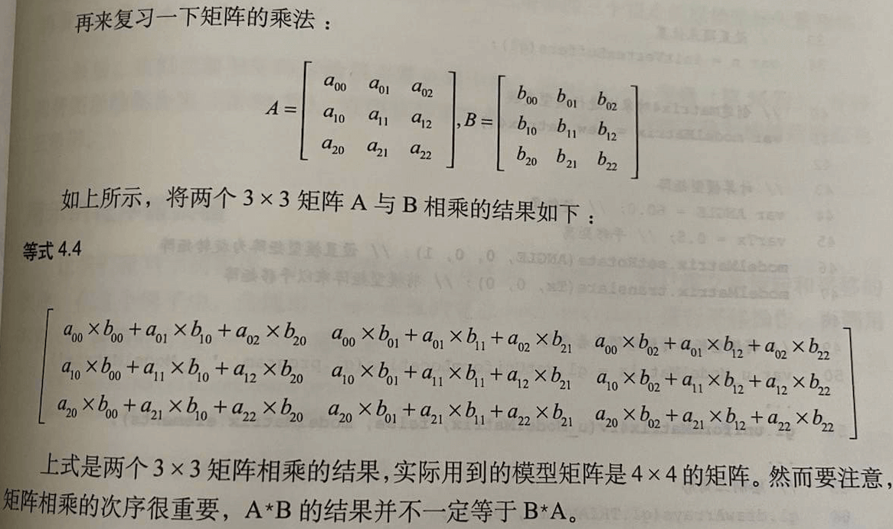

本章主要是学习如何使用矩阵库对图形进行变换，如何将多个基本变换组合成一个复杂的变换，如何产生动画
有两个点比较关键：复杂变幻的矩阵可以通过一系列基本变换的矩阵相乘得到；通过反复变换和重绘图形可以达到动画的效果
模型变换/建模变换：一个模型可能经过了多次变换，将这些变换全部符合成一个等效的变化，就得到了模型变换/建模变换
例：平移后旋转三角形
《‘平移’后的坐标》= 《平移矩阵》*《原始坐标》
《‘平移后旋转’后的坐标》=《旋转矩阵》*《平移后的坐标》
《‘平移后旋转’后的坐标》=《旋转矩阵》*（《平移矩阵》*《原始坐标》
《‘平移后旋转’后的坐标》=（《旋转矩阵》*《平移矩阵》）*《原始坐标》
